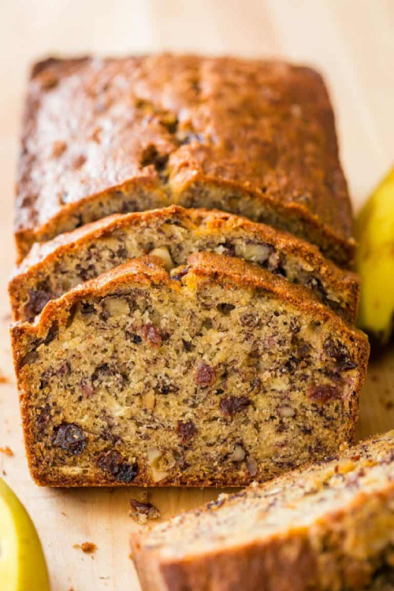
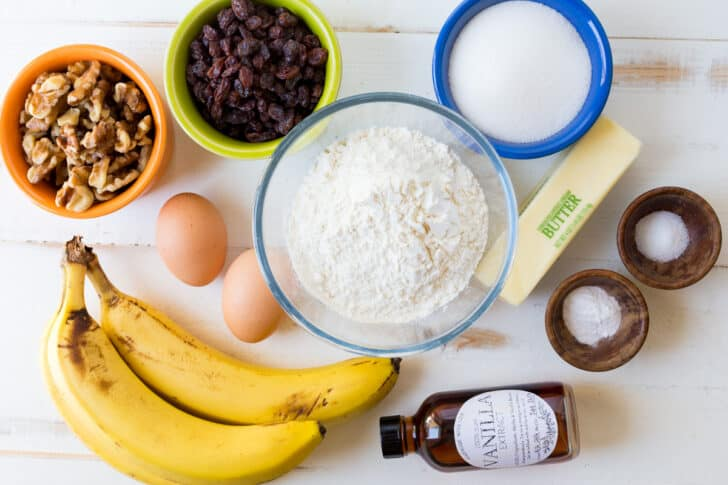
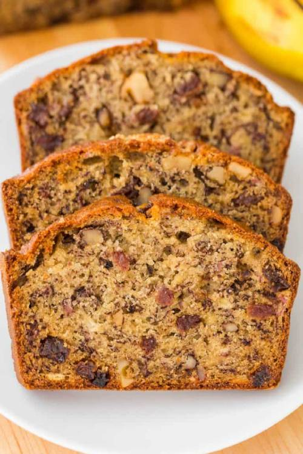

Banana Bread Recipe
April 15, 2020
An easy and moist Banana Bread Recipe that is loaded with bananas, tangy-sweet raisins, and toasted walnuts. This is one of our favorite overripe banana recipes with hundreds of 5-star reviews.

Ingredients for Banana Bread:
This is everything you need to make the best banana bread: flour, sugar, salt, baking soda, vanilla extract, softened butter, eggs and of course very ripe bananas. Adding walnuts and raisins is optional but adds great taste and texture, turning it into a banana nut bread.
Can I Omit Walnuts and Raisins?
YES! The recipe will still work if raisins and walnuts are omitted. We make it nut-free all the time due to a walnut allergy in the family. You will still have the softest, super moist and scrumptious loaf. You can also replace them with some chocolate to make Chocolate Chip Banana Bread.

How to Ripen Bananas:
- How to Ripen Bananas: If your bananas are a little green and you want them to ripen quicker, place them on a baking sheet and bake at 250˚F for 15 to 20 minutes depending on the initial ripeness of the bananas.
- 24 Hour Counter Method: If you are willing to wait 1 day, you can place the bunch of bananas (without separating them) in a paper bag, cover and leave at room temperature. Bananas emit ethylene which causes ripening. Adding an apple to the bag will speed up the process.
Can I Freeze Overripe Bananas?
If you have overripe bananas and aren’t ready to bake with them, DO NOT throw them away!
How to Freeze Bananas: place them un-peeled in a freezer-safe bag, remove any excess air and freeze up to 3 months. You can use thawed bananas for banana bread. You can also freeze them peeled and cut into pieces for easier use in smoothies. P.S. You can also freeze a whole banana bread with the same method!

How to Make Banana Bread:
This is the easiest banana bread recipe. We mix it in a stand mixer because it’s easy, but you can use an electric hand mixer and can even make it work with a hand whisk. There is no fancy equipment required. Watch the video tutorial below and you will be a pro in no time!
- In the mixing bowl, cream together butter and sugar.
- Mix in mashed bananas and eggs.
- Whisk together dry ingredients: flour, salt, and baking soda and add to batter.
- Stir in vanilla, walnuts, and raisins, transfer to prepared loaf pan and bake.
Tips for the BEST Cupcakes:
- Room Temperature Ingredients – eggs, buttermilk and butter must be at room temperature to keep your batter an even consistency.
- Alternate Adding Flour and Buttermilk – this keeps the mixture uniform and well blended. If you add in all of the flour or buttermilk at once, it can saturate the creamed butter and cause the mixture to separate. Mix well between each addition.
- Measure Correctly – be sure to use the proper measuring cups for wet and dry ingredients.
- Don’t Overfill– Fill cupcake liners 2/3 full or they will overflow and cause a muffin top. If you divide evenly between 12 cupcakes, you should have exactly enough batter.